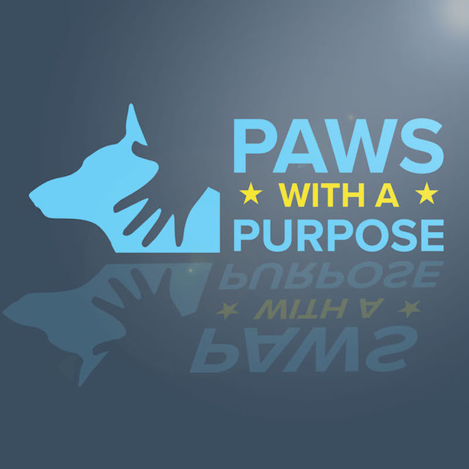
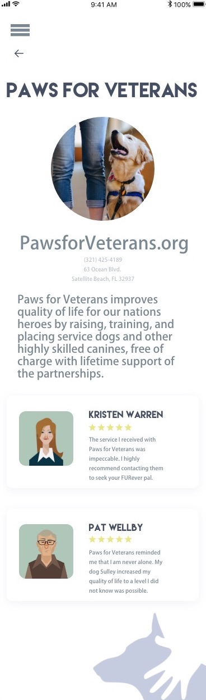
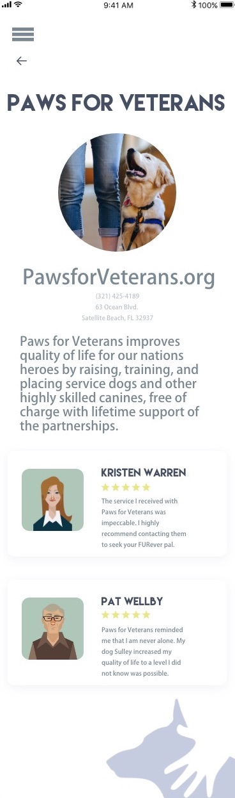

Second Place Winner Adobe Creative Jam

WHAT
Paws With A Purpose serves as a third party networking app to discover organizations that offer veterans service dogs with ease, simplicity and credibility.
WHY
The process of searching, discovering and reaching out to a service dog organization can be a complex, broad and uneasy journey. Paws With A Purpose is available to create a friendly, navigable environment for veterans to better understand and find organizations that are most suitable to them and their disabilities.
WHO
Paws With a Purpose is for approved veterans seeking their fur-ever companion. Age range varies with a mjority above 35 years.


 
